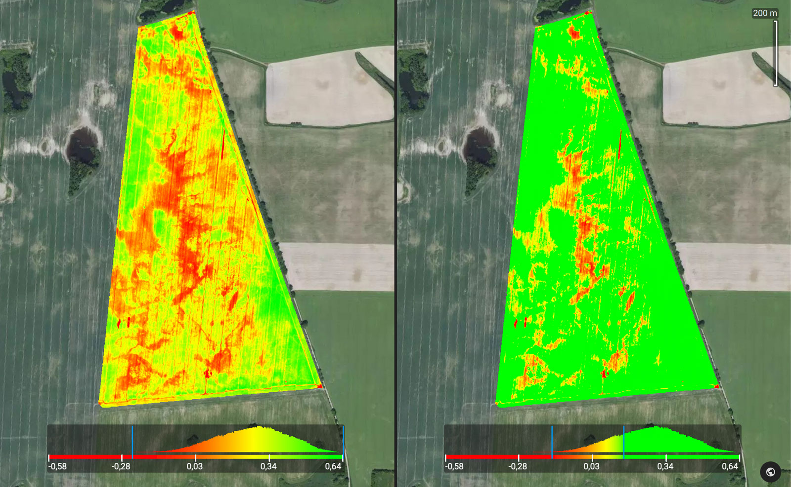

01
Monitore seus campos por satélite
Acompanhe o desenvolvimento das suas culturas com imagens de satélite atualizadas a cada 3-5 dias. Identifique áreas problemáticas antes que se tornem grandes prejuízos.

02
Adicione campos com apenas 1 clique
Você pode adicionar os limites dos talhões com apenas 1 clique. Isso porque já os detectamos usando imagens de satélite.

001 24.9 ha
002 60.2 ha
003 88.5 ha
03
Analise gráficos de índice de vegetação NDVI
Acompanhe a soma térmica, precipitação acumulada e índice de vegetação ao longo da safra. Compare diferentes períodos e tome decisões baseadas em dados.
Soma térmica e precipitação acumulada
Safra 2024
Soja
Soma térmica
Precipitação
Índice NDVI